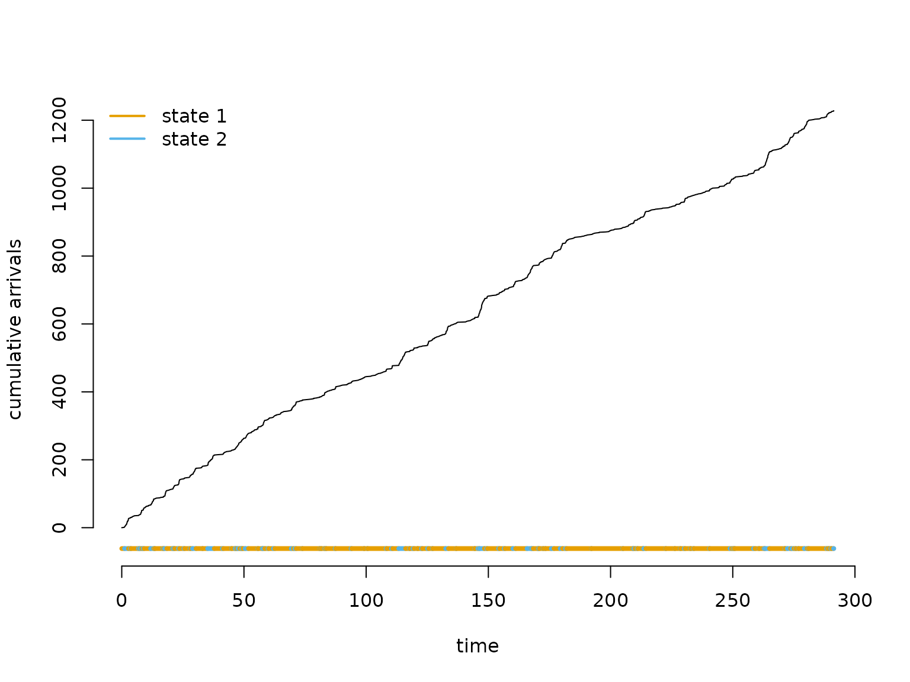
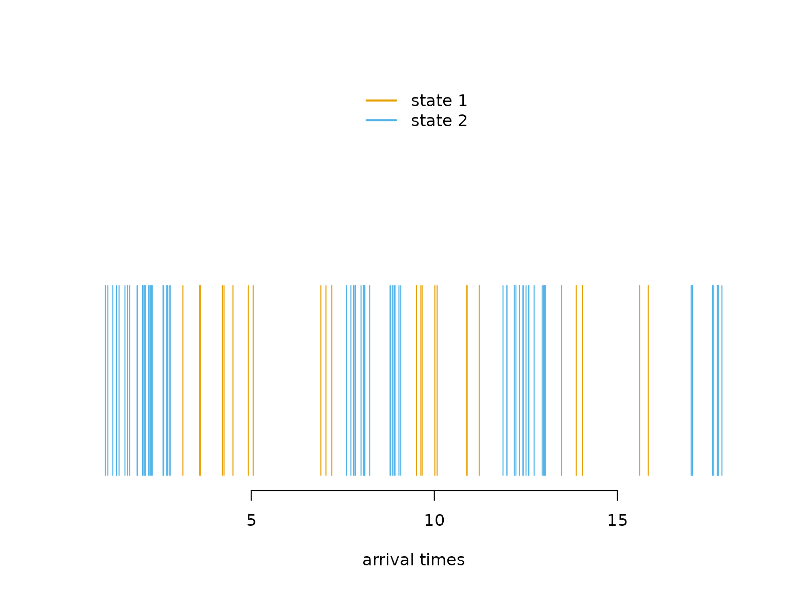
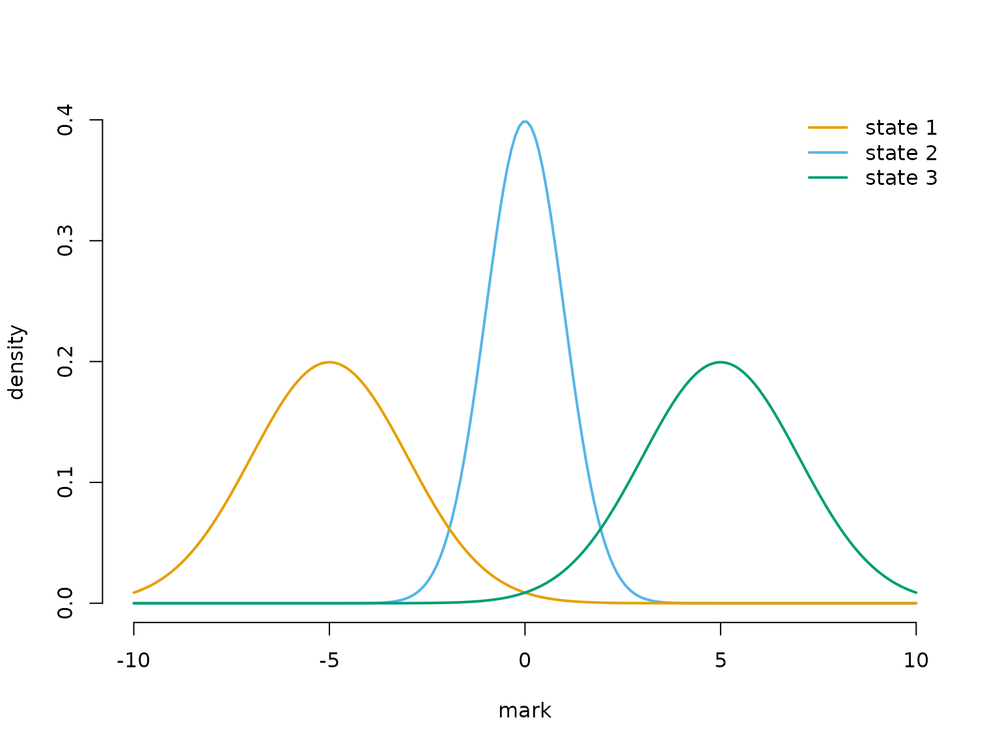
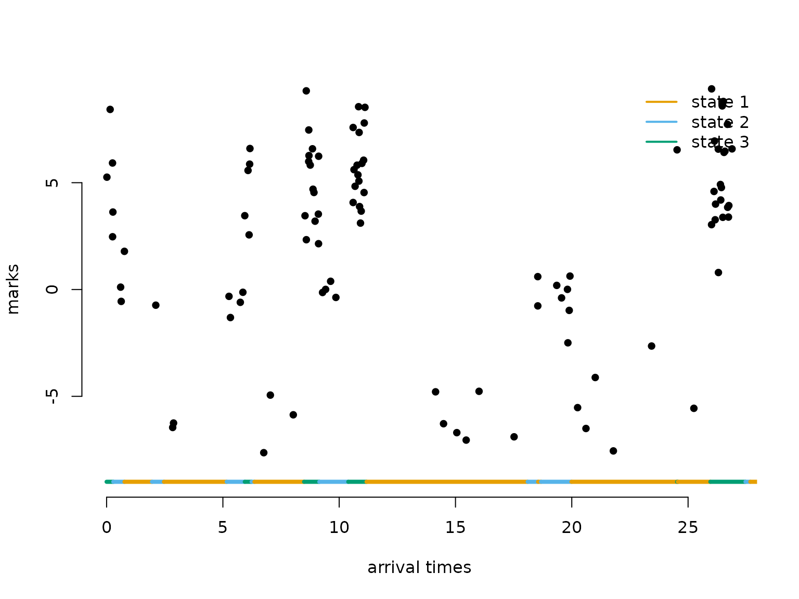
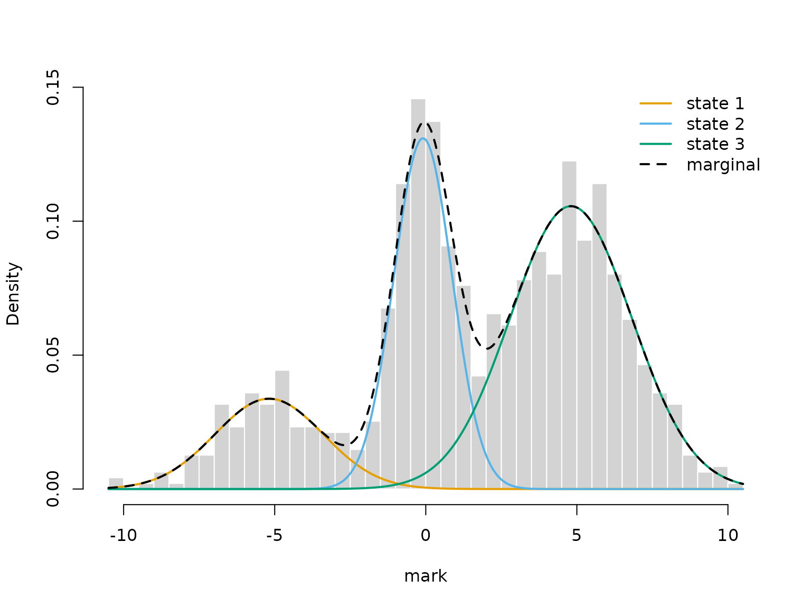
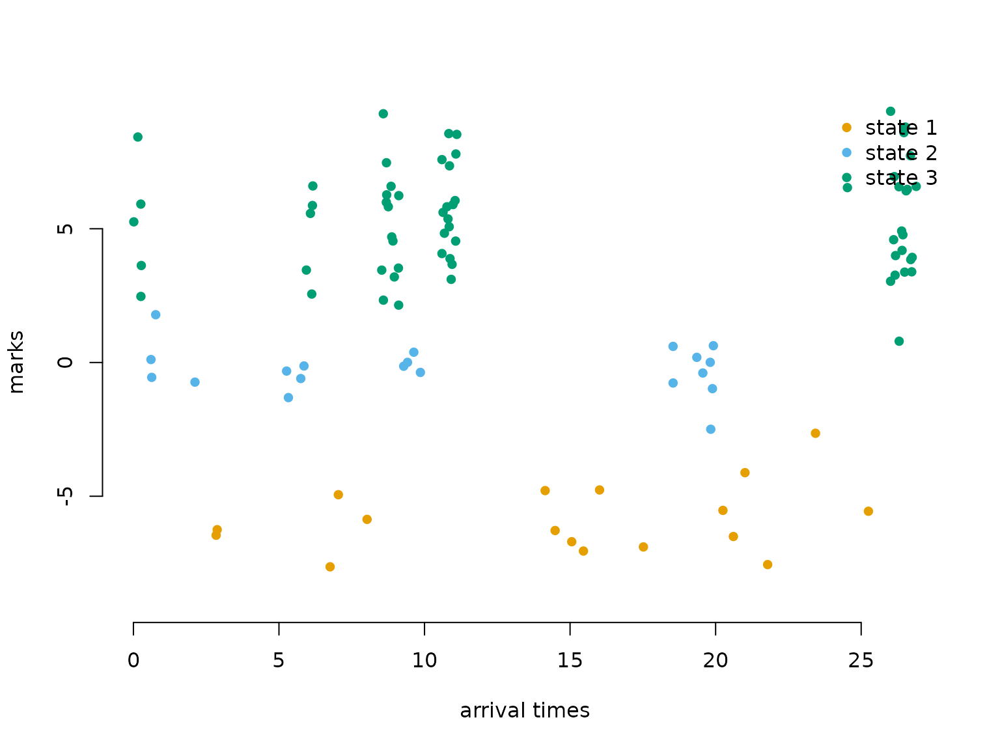

7 Markov-modulated (marked) Poisson processes
Jan-Ole Fischer
MMMPPs.RmdBefore diving into this vignette, we recommend reading the vignettes Introduction to LaMa, Automatic differentiation via RTMB, and Continuous-time HMMs.
In a continuous-time HMM, observation values carry information about the latent state while the observation times are treated as fixed or uninformative (the snapshot property). The Markov-modulated Poisson process (MMPP) reverses this: the arrival times themselves are the observations, and their spacing carries information about the hidden state process.
The key idea is that an unobserved continuous-time Markov chain (CTMC) modulates the rate of a Poisson process. While the chain stays in state j, events arrive at a constant, state-specific rate \lambda_j. A high-rate state produces rapid bursts of closely spaced arrivals; a low-rate state produces sparse events. By fitting the model to the observed arrival times alone, we can infer both the Poisson rates and the dynamics of the hidden CTMC (described by its generator matrix Q, as in the continuous-time HMM vignette).
A natural extension, the Markov-modulated marked Poisson process (MMMPP), additionally associates a random mark y_i with each arrival. Marks are drawn from a state-dependent distribution at the moment of arrival, providing a second source of information about the latent state alongside the timing. For more background see Meier-Hellstern (1987) and Langrock et al. (2013).
Likelihood
MMPP
For n arrivals at times t_1 < \dots < t_n, let \Delta t_i = t_{i+1} - t_i be the inter-arrival waiting times and \Lambda = \text{diag}(\lambda_1, \dots, \lambda_N) the diagonal matrix of state-dependent rates. The likelihood of a stationary MMPP is
L(\theta) = \pi \Bigl(\prod_{i=1}^{n-1} \exp\bigl((Q - \Lambda)\,\Delta t_i\bigr)\,\Lambda\Bigr)\,\mathbf{1}^\top,
where \pi is the stationary distribution of the CTMC and \mathbf{1} is a column vector of ones. The matrix \exp((Q - \Lambda)\,\Delta t_i) propagates the state distribution through gap \Delta t_i while accounting for the fact that no event occurred during this interval; \Lambda then contributes the instantaneous rate of the event that does occur at the end of the gap.
This has exactly the same structure as the regular
HMM likelihood, so forward() applies directly. We construct
the allprobs matrix with n
rows: the first row is all ones (pure initialisation with \pi, no density contribution), and rows 2, \dots, n all equal (\lambda_1, \dots, \lambda_N) — the
instantaneous arrival-rate density at each observed event.
MMMPP
When each arrival i also carries a mark y_i, the likelihood gains one additional factor per event:
L(\theta) = \pi\,P(y_1) \Bigl(\prod_{i=1}^{n-1} \exp\bigl((Q - \Lambda)\,\Delta t_i\bigr)\,\Lambda\,P(y_{i+1})\Bigr)\,\mathbf{1}^\top,
where P(y_i) is a diagonal matrix of
state-dependent densities evaluated at mark y_i. In practice we fold \Lambda into the allprobs
matrix: after filling in the mark densities for all n rows, rows 2,
\dots, n are multiplied element-wise by (\lambda_1, \dots, \lambda_N), so the same
forward() call handles everything.
Example 1: Markov-modulated Poisson processes
Setting parameters
We use a 2-state model. State 2 has a much higher arrival rate and shorter mean sojourn time — it is the bursty state.
lambda = c(2, 15) # state-dependent Poisson rates
Q = matrix(c(-0.5, 0.5,
2.0, -2.0), nrow = 2, byrow = TRUE)The mean sojourn time in state 1 is 1/0.5 = 2 time units; in state 2 it is 1/2 = 0.5 time units.
Simulating an MMPP
The simulation mirrors the CTMC simulation from the continuous-time
HMM vignette. The only difference is that instead of drawing observation
values during each sojourn, we draw Poisson arrival times. Within each
sojourn of length dwell, the number of arrivals is Poisson
with mean lambda * dwell, and their positions are uniform
over the sojourn interval.
set.seed(123)
k = 200 # number of state switches to simulate
s = rep(NA, k) # latent state sequence
trans_times = rep(NA, k) # cumulative transition times
# initialise
s[1] = sample(1:2, 1)
dwell = rexp(1, -Q[s[1], s[1]])
trans_times[1] = dwell
n_arrivals = rpois(1, lambda[s[1]] * dwell)
arrival_times = sort(runif(n_arrivals, 0, dwell))
for (t in 2:k) {
# 2-state chain: always switches to the other state
s[t] = 3 - s[t-1]
dwell = rexp(1, -Q[s[t], s[t]])
trans_times[t] = trans_times[t-1] + dwell
t_start = trans_times[t-1]
t_end = trans_times[t]
# Poisson arrivals uniformly distributed within sojourn
n_arrivals = rpois(1, lambda[s[t]] * dwell)
arrival_times = c(arrival_times, sort(runif(n_arrivals, t_start, t_end)))
}The cumulative arrivals plot is the clearest way to see how the Poisson rate changes with the hidden state: the slope of the curve equals the current arrival rate, so steep segments correspond to the bursty state and shallow segments to the slow state.
color = LaMaColors(2)
n = length(arrival_times)
plot(c(0, arrival_times), 0:n, type = "l", bty = "n",
xlab = "time", ylab = "cumulative arrivals",
ylim = c(-n * 0.05, n))
segments(x0 = c(0, trans_times[-k]), x1 = trans_times,
y0 = rep(-n * 0.05, k), y1 = rep(-n * 0.05, k),
col = color[s], lwd = 4)
legend("topleft", lwd = 2, col = color, legend = paste("state", 1:2), box.lwd = 0)
Writing the negative log-likelihood function
The allprobs matrix has
length(timediff) + 1 rows (one per arrival, plus one for
initialisation). Row 1 is all ones; the remaining rows carry the
state-dependent rates \lambda_j. The
transition matrices are computed via
tpm_ct(Q, timediff, lambda), where the optional
lambda argument internally subtracts \Lambda from Q before the matrix exponential —
simultaneously propagating the state distribution and accounting for the
absence of arrivals during each gap.
nll = function(par) {
getAll(par, dat)
lambda = exp(log_lambda); REPORT(lambda)
Q = generator(log_qs); REPORT(Q)
Pi = stationary_ct(Q); REPORT(Pi)
Qube = tpm_ct(Q, timediff, lambda)
allprobs = matrix(rep(lambda, length(timediff) + 1),
nrow = length(timediff) + 1, ncol = N, byrow = TRUE)
allprobs[1,] = 1
-forward(Pi, Qube, allprobs)
}Fitting the model
N = 2
timediff = diff(arrival_times)
par = list(
log_lambda = log(c(2, 15)),
log_qs = log(c(2, 0.5))
)
dat = list(
timediff = timediff,
N = N
)
obj = MakeADFun(nll, par, silent = TRUE)
system.time(
opt <- nlminb(obj$par, obj$fn, obj$gr)
)
#> user system elapsed
#> 0.338 0.000 0.338
mod = report(obj)Results
mod$lambda # true: 2, 15
#> [1] 1.950361 15.056559
round(mod$Q, 3) # true: Q as defined above
#> S1 S2
#> S1 -0.399 0.399
#> S2 1.883 -1.883
round(1 / diag(-mod$Q), 2) # mean dwell times; true: 2, 0.5
#> S1 S2
#> 2.51 0.53
mod$Pi # stationary distribution of the CTMC
#> S1 S2
#> 0.8251464 0.1748536We can decode the most probable state sequence with
viterbi() and colour each arrival by its inferred
state.
states = viterbi(mod = mod)
plot(arrival_times[1:100], rep(0.5, 100), type = "h", bty = "n",
ylim = c(0, 1), yaxt = "n", col = color[states[1:100]],
xlab = "arrival times", ylab = "")
legend("top", lwd = 2, col = color, legend = paste("state", 1:N), box.lwd = 0)
Example 2: Markov-modulated marked Poisson processes
Adding marks to each arrival provides a second channel of information about the latent state. Here we use three states with well-separated mark distributions so the model is clearly identifiable.
Setting parameters
lambda = c(1, 5, 20)
Q = matrix(c(-0.5, 0.3, 0.2,
0.7, -1.0, 0.3,
1.0, 1.0, -2.0), nrow = 3, byrow = TRUE)
mu = c(-5, 0, 5)
sigma = c(2, 1, 2)
color = LaMaColors(3)
curve(dnorm(x, mu[2], sigma[2]), xlim = c(-10, 10), bty = "n",
lwd = 2, col = color[2], n = 200, ylab = "density", xlab = "mark")
curve(dnorm(x, mu[1], sigma[1]), add = TRUE, lwd = 2, col = color[1], n = 200)
curve(dnorm(x, mu[3], sigma[3]), add = TRUE, lwd = 2, col = color[3], n = 200)
legend("topright", lwd = 2, col = color, bty = "n", legend = paste("state", 1:3))
Simulating an MMMPP
For three states, the conditional next-state probabilities after leaving state i are \omega_{ij} = q_{ij}/(-q_{ii}). Marks are drawn independently from the state-dependent distribution at each arrival, in the same order as the arrival times.
set.seed(123)
k = 200
s = rep(NA, k)
trans_times = rep(NA, k)
s[1] = sample(1:3, 1)
dwell = rexp(1, -Q[s[1], s[1]])
trans_times[1] = dwell
n_arrivals = rpois(1, lambda[s[1]] * dwell)
new_arrivals = sort(runif(n_arrivals, 0, dwell))
arrival_times = new_arrivals
marks = rnorm(n_arrivals, mu[s[1]], sigma[s[1]])
for (t in 2:k) {
# conditional next-state probabilities: omega_ij = q_ij / (-q_ii)
omega = Q[s[t-1], -s[t-1]] / -Q[s[t-1], s[t-1]]
s[t] = sample((1:3)[-s[t-1]], 1, prob = omega)
dwell = rexp(1, -Q[s[t], s[t]])
trans_times[t] = trans_times[t-1] + dwell
t_start = trans_times[t-1]
t_end = trans_times[t]
n_arrivals = rpois(1, lambda[s[t]] * dwell)
new_arrivals = sort(runif(n_arrivals, t_start, t_end))
arrival_times = c(arrival_times, new_arrivals)
marks = c(marks, rnorm(n_arrivals, mu[s[t]], sigma[s[t]]))
}
n = length(arrival_times)
plot(arrival_times[1:100], marks[1:100], pch = 16, bty = "n",
ylim = c(-9, 9), xlab = "arrival times", ylab = "marks")
segments(x0 = c(0, trans_times[1:98]), x1 = trans_times[1:99],
y0 = rep(-9, 99), y1 = rep(-9, 99), col = color[s[1:99]], lwd = 4)
legend("topright", lwd = 2, col = color,
legend = paste("state", 1:3), box.lwd = 0)
Writing the negative log-likelihood function
The allprobs matrix is built from the mark densities for
all n arrivals. Rows 2, \dots, n are then multiplied element-wise
by the state-dependent rates (\lambda_1,
\dots, \lambda_N) to fold in the Poisson arrival contribution,
giving the combined MMMPP likelihood.
nll2 = function(par) {
getAll(par, dat)
lambda = exp(log_lambda); REPORT(lambda)
REPORT(mu)
sigma = exp(log_sigma); REPORT(sigma)
Q = generator(log_qs); REPORT(Q)
Pi = stationary_ct(Q); REPORT(Pi)
Qube = tpm_ct(Q, timediff, lambda)
allprobs = matrix(1, length(marks), N)
for (j in 1:N) allprobs[, j] = dnorm(marks, mu[j], sigma[j])
# multiply rows 2:n by lambda to fold in the arrival-rate contribution
allprobs[-1,] = allprobs[-1,] * matrix(lambda, length(marks) - 1, N, byrow = TRUE)
-forward(Pi, Qube, allprobs)
}Fitting the model
N = 3
timediff = diff(arrival_times)
par = list(
log_lambda = log(c(1, 5, 20)),
mu = c(-5, 0, 5),
log_sigma = log(c(2, 1, 2)),
log_qs = log(c(0.7, 1, 0.3, 1, 0.2, 0.3))
)
dat = list(
marks = marks,
timediff = timediff,
N = N
)
obj2 = MakeADFun(nll2, par, silent = TRUE)
system.time(
opt2 <- nlminb(obj2$par, obj2$fn, obj2$gr)
)
#> user system elapsed
#> 0.987 0.000 0.987
mod2 = report(obj2)Results
mod2$lambda # true: 1, 5, 20
#> [1] 0.9646738 4.8641071 19.5009530
mod2$mu # true: -5, 0, 5
#> [1] -5.18540494 -0.09096836 4.80540113
mod2$sigma # true: 2, 1, 2
#> [1] 1.7931070 0.9644496 2.0093249
round(mod2$Q, 3) # true: Q as defined above
#> S1 S2 S3
#> S1 -0.591 0.279 0.312
#> S2 0.926 -1.180 0.254
#> S3 1.193 1.210 -2.403
round(1 / diag(-mod2$Q), 2) # mean dwell times; true: 2, 1, 0.5
#> S1 S2 S3
#> 1.69 0.85 0.42
mod2$Pi # stationary distribution
#> S1 S2 S3
#> 0.6297018 0.2609501 0.1093482Overlaying the fitted state-dependent densities on a histogram of all marks provides an intuitive model check. Note that the mixture weights are not the stationary distribution \pi_j (proportion of time in state j) but the rate-weighted proportions w_j \propto \pi_j \lambda_j — states with higher arrival rates contribute disproportionately more marks.
# marks arrive at rate lambda_j in state j, so the fraction of marks from
# state j is proportional to Pi[j] * lambda[j], not Pi[j] alone
w = mod2$Pi * mod2$lambda / sum(mod2$Pi * mod2$lambda)
hist(marks, prob = TRUE, breaks = 50, border = "white", main = "",
xlab = "mark")
for (j in 1:N) {
curve(w[j] * dnorm(x, mod2$mu[j], mod2$sigma[j]),
add = TRUE, lwd = 2, col = color[j], n = 300)
}
curve(rowSums(sapply(1:N, function(j) w[j] * dnorm(x, mod2$mu[j], mod2$sigma[j]))),
add = TRUE, lwd = 2, lty = 2, n = 300)
legend("topright", lwd = 2, lty = c(1, 1, 1, 2), bty = "n",
col = c(color, "black"), legend = c(paste("state", 1:N), "marginal"))
State decoding via viterbi() now colours each mark by
its inferred state — combining both timing and mark information to
assign the latent state.
states2 = viterbi(mod = mod2)
plot(arrival_times[1:100], marks[1:100], pch = 16, bty = "n",
col = color[states2[1:100]],
ylim = c(-9, 9), xlab = "arrival times", ylab = "marks")
legend("topright", pch = 16, col = color,
legend = paste("state", 1:3), box.lwd = 0)